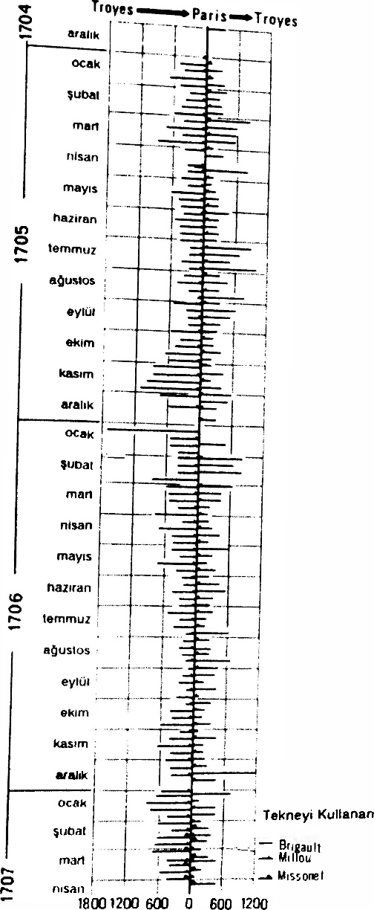
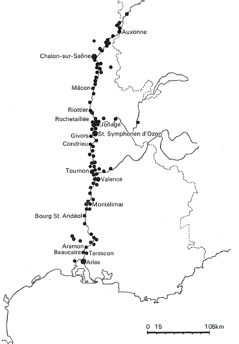
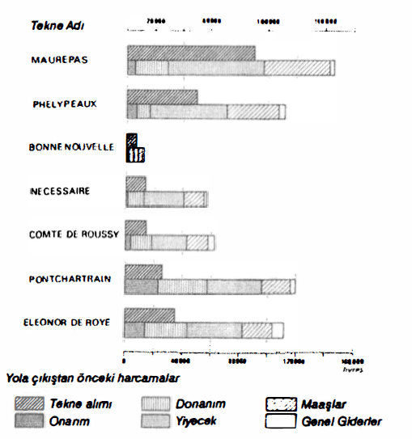

Dünyanın dünya olduğu kadar eski olan taşıma araçları, yüzyıllar boyunca oldukları gibi kalma eğilimindedirler. Bu eserin ilk cildinde, vasat ve çok sayıda aracı olan bu köhne altyapıdan söz ettim: kayıklar, yelkenliler, arabalar, koşumlar, yük hayvanları, bellhorses (Londra’ya Staffordshire çöreklerini veya taşranın kumaş balyalarını getiren şu çıngıraklı atlar) sıraları, Sicilya tarzında katır sürüleri (her hayvan diğerinin kuyruğuna bağlanmıştır), veya 1815’e doğru Volga boyunca tekneleri çeken veya yürüten şu ağır işçiler olan, 100.000 burlaki.
Taşımacılık, üretimin gerekli son noktasıdır; hızlandığında her şey iyi, veya daha iyi gitmektedir. II. Ekaterina’nın Londra’daki elçisi Simon Vorontsof’a göre, İngiliz refahının artışı, 50 yıl içinde en azından beş kat artmış olan bir dolaşımdır. XVIII. yüzyılın kalkışı, sonuç olarak eski araçlarını, gerçekten devrimci teknik yenilik olmadığı halde, tam kullanmaya doğru yönelen bir ulaşımdır. Bunun anlamı, yeni sorunların olmadığı değildir. Fransa için, daha büyük krallık yollarının inşa edilmesinden önce, Cantillon çıkmaz durumu ortaya koymuştur: eğer ulaşım aşırı at miktarıyla artarsa, bu hayvanları insanların aleyhine olarak beslemek gerekir.
Montchrestien, Petty, Defoe veya başrahip Galiani’nin hatırlattıkları üzere, taşımacılık bizatihi bir “endüstridir; bu sonuncusu, “taşımacılık, ... bir cins manüfaktürdür” demektedir.40i Ama kapitalizmin sonuna kadar katılmadığı, köhne bir manüfaktür. Ve bunun nedeni, yalnızca eksenler üzerindeki ulaşımın “para getirmesidir. ikincil, sıradan, sefil olan diğer ulaşım, mütevazi gelirlere razı olanlara bırakılmıştır. Kapitalizmin bu alandaki payını tartmak, aynı zamanda, çeşitli taşımacılık dallarının modernliğini veya köhneliğini veyahut daha iyisi, “verimi”ni tartmak demektir: kapitalizm kara ulaşımına düşük ölçekte katılmakta, “nehir arabaları” alanında sınırlı kalmakta, deniz söz konusu olduğunda bu katılım daha vurgulu hale gelmektedir. Ama para burada da seçim yapmakta, her şeyi ele geçirme kaygısına düşmemektedir.
Kara taşımaları, olağan durumda yetersiz olarak sunulmaktadırlar. Karayolları yüzyıllar boyunca, doğanın sunduğu biçimleriyle veya buna yakın bir şekilde kalmışlardır. Ama bunlar nisbi yetersizliklerdir: eskinin mübadeleleri, eskinin ekonomisine tekâbül etmektedirler. Arabalar, yük hayvanları, postacılar, tatarlar, posta menzilleri, belli bir talebin işlevinde rol oynamaktadırlar. Ve tüm hesaplardan sonra, W. Sombart’ın bugün gözden ırak düşmüş olan eski gösterimine, yeteri kadar önem verilmemiştir. Bu gösterim, sağduyunun a priori olarak reddettiği, kara ulaşımının, nehir ve kanal ulaşımından daha fazla mal sağladığı görüşünü ileri sürmektedir.
Sombart'ın oldukça akıllı bir şekilde yürütülen hesaplaması, Almanya’da, XVIII. yüzyılın sonunda, bir büyüklük sıralaması saptamaktadır. Taşımacılıkta kullanılan atların sayısı yaklaşık 40.000 olarak tahmin edildiğinden, arabalar ve yük hayvanları tarafından yapılan taşımanın yılda 500 milyon kilometrik ton olduğu söylenebilir (geçerken işaret edelim ki, 1913'te aynı mekân üzerindeki demiryolu taşımacılığı bundan 130 kere daha yüksek olacak ve demiryolu devriminin çarpıcı vurgusunu ortaya koyacaktır). Su yolları için, tekne sayısı, ortalama kapasiteleri ve gidiş dönüş rakamlarıyla çarpılınca, ortaya yıllık olarak 80-90 milyon kilometrik ton çıkmaktadır. Demek ki, XVIII. yüzyılın sonunda ve XIX. yüzyılın başında, Almanya'nın tümü için -Ren, Elbe ve Oder üzerindeki önemli nehir trafiğine rağmen-, tatlı suyalları ve karayollarının toplam kapasiteleri arasındaki oran 1 'e 5, karayollarının lehine olacaktır. Gerçekte, 40.000 at rakamı yalnızca taşımacılıkta uzmanlaşmış hayvanları içermekte, çok büyük sayılara ulaşan çiftlik atlarını (Lavoisier'nin zamanında, Fransa'da 1.200.000) kapsamamaktadır. Oysa bu köylü atları, birçok düzenli veya mevsimlik taşımayı sağlamaktadırlar. Demek ki, kara taşımacılığı Sombart tarafından, daha çok değerinin altında hesaplanmıştır, ama nehire ilişkin hesaplama da, önemli miktarlara ulaşan odun yüzdürülmesini bir kenara bırakmaktadır.
Acaba Alman örneğinden hareket ederek, genelleme yapmak mümkün müdür? Kuşkusuz, taşımacılığın büyük bölümünün su yollarından yapıldığı Hollanda'ya ilişkin olarak hayır. Seyrüsefere uygun birçok küçük ırmak ve kanala sahip olan ve Sombart'ın iki taşımacılık tarzının eşit olduğunu tahmin ettiği İngiltere için de hayır. Buna karşılık, Avrupa'nın geri kalanı, nehir yolları bakımından, Almanya'dan daha az donanımlıdır. Hatta bir Fransız belgesi, 1778'de abartılı bir şekilde “taşımacılık, nehirlerdeki güçlükler nedeniyle, adeta tamamen karadan yapılıyor” diyecek kadar ileri gitmiştir. 1828'de Durtens'de, dolaşıma sokulan 46 milyon tondan, yalnızca 4,8'inin suyolunu, geri kalanının karayolunu (küçük taşımalar 30,9; büyük taşımalar 10,4) kullanmış olduğunu görmek ilginçtir. Oran kabaca 1'e 10’dur. Ama 1800-1840 arasında nakliye arabalarının iki katına çıktığı da doğrudur.
Karayolu taşımacılığının bu hacmi, bir yandan çok kısa mesafeli araba nakliyesiyle açıklanmaktadır, çünkü kısa bir güzergâh üzerinde araba, kayıktan daha pahalıya gelmemektedir: örneğin 1708'de Orleans’dan Paris'e buğday taşıma konusunda yapılan harcama, kral yoluyla, Orleans kanalında birbirlerine eşittir -iki modern yol-. Diğer yandan, su taşımacılığının kesintili olması nedeniyle, nehir sistemleri arasında zorunlu ve bazen de güç olan bağlantılar kurmak gerekmektedir; yani bir bakıma Sibirya ve Kuzey Amerika'daki taşımacılığın bir benzeri: Lyon ile Roanne arasında, yani Rhöne ile Loire arasında 400-500 öküz arabası sürekli olarak çalışmaktadır.
Fakat esas neden, tüm yardımcı faaliyetler gibi, gerçek maliyetinin altında bedel ödenen köylü taşımacılığının sürekli ve aşırı bol arzıdır. Herkes bu hazneden beslenebilir. Bazı kırsal bölgeler -örneğin Renanya'daki Hunsrüek, Hesse, Thuringiya gibi-, “Charreton”ları (araba) XVI. yüzyılda Anvers’e kadar giden, Barrois'daki Rembertcourt-aux-Pcts gibi bazı köyler, yollar boyunca kısa mesafeli taşımacılığı, uzun zamandan beri yürüten tüm Alp köyleri gibi olan bazı köyler taşımacılıkta uzmanlaşmışlardır. Ancak, bu profesyonellerin yanında, büyük kitle, fırsat çıktığında arabacılık yapan köylülerden meydana gelmektedir. 25 Nisan 1782 tarihli Fransız fermanı hâlâ “arabacılık tamamen serbest olmalıdır, yalnızca posta arabalarının sahip oldukları ayrıcalıklar dışında (yani düzenli yolcu ve belli bir ağırlığı aşmayan koli taşımacılığı) hiçbir kısıtlama olmamalıdır. …Demek ki, ticaret için çok gerekli olan bu özgürlüğü bozacak hiçbir şey yapılmamalıdır: atlarım kullanmak ve onları doyuracak olanakları sağlamak üzere, geçici olarak arabacılık yapan çiftçi, herhangi bir formalite olmaksızın bu mesleğe girip, çıkabilmelidir”.
Köylü emeğinin tek kusuru, mevsimlik olmasıdır. Fakat çok kimse bu duruma uyum sağlamaktadır. Örneğin Languedoc’taki Peccais tuzu, Rhöne’u, büyük tüccarların denetimindeki koskoca tekne kervanları halinde yukarı doğru çıkarken, Seysell’de karaya çıkmak ve Cenevre yakınındaki küçük Regonfle köyüne karadan ulaşmak, sonra buradan tekrar su yoluna koyulmak zorundadır. Nicolas Burlamachi adlı bir tüccar, 10 Temmuz 1650’de Cenevre'den şöyle yazmaktadır: “... Ve eğer hasat başlamazsa, (tuzumuzu) birkaç gün içinde alırız”. 14 Temmuzda: “Tuzumuz ilerliyor ve hergün bir miktar geliyor, 15 gün içinde hepsini alacağımızı umuyorum... Bu partide yaklaşık 750 araba var”. 18 Eylülde “ ... ekimlerin başlamış olması yüzünden, arabaların çok bol olmamasına rağmen, geri kalanını birkaç gün içinde alırız. Ama eğer tüm tohumlar ekilirse, hemen gelir” diye yazmaktadır.
Bir yüzyıl sonra, 22 Temmuz 1771’de, Bonneville’deki Faucigny'deyiz. Buğday kıttır, emin acilen çavdar getirtmek istemektedir: “aç olunduğunda, yenilecek ekmek hakkında tartışma yapılmaz”. Ama Sallanches belediye meclisine şöyle yazmaktadır: “hasadın en sıkışık zamanındayız, ... bekleneceği üzere köylü arabalarını kullanmak olanaksızdır”. Bir demirhane ustasının şu düşüncesinin tadına varalım (23 Ventöse, Yıl VI): “sabahlar (sürümler anlayınız) arabaların ilerlemesine tamamen engel oluyorlar”
Tarımsal “takvim”in izin vermesiyle hemen kendini sunan bir emek gücüyle, tüm devletler için çok erkenden, özel kişiler için de yavaş yavaş kurulan sabit tarihleri olan posta ve yolcu taşıma sistemi arasında. uzmanlaşmış ve örgütlenmeye çalışan bir taşımacılık daha yer almaktadır, ama bu örgütlenme on kerenin dokuzunda, çok başlangıç düzeyinde kalmaktadır. Söz konusu olanlar birkaç at ve arabası olan küçük girişimcilerdir. Hannaver'de 1833’te yapılmış olan bir döküm, kara taşımacılığının buradaki hâlâ zenaat tipi olarak kalmasının kural olduğunu işaret etmektedir. Almanya XVI. yüzyılda olduğu gibi, kuzeyden güneye “serbest” veya “dümdüz vahşi” (İsviçre kantonlarında strachfuhrbetrieb denilmektedir) taşımacılık tarafından kat’edilmektedir. Bu ulaşım maceraya giden arabacılar, evlerinden uzakta aylarca “denizciler gibi seyreden”, navlun peşinde olan ve bazen de kaza yapan taşımacılar tarafından sağlanmaktadır. Ama XIX. yüzyılda bunlar hâlâ yerlerindedir. Ve bana bunlar, kendi girişimleriymiş gibi gelmektedir.
Tüm ulaşımlar, hanların oluşturduğu menzillere yaslanmaktadır: bu durum Venezia’da daha XVI. yüzyılda, İngiltere'de çok daha açık olarak, daha XVII. yüzyılda görülmektedir. Han bu sonuncu ülkede, bugünkü hanla hiçbir ilgisi olmayan bir şekilde, ticari bir merkez haline gelmektedir. Vilts kontluğunda küçük bir kent olan Salisbury 1686'da, hanlarında 548 yolcu ve 865 at barındırabiliyordu. Fransa'da, otelci fiili durumda, taşımacıların komisyoncusu idi. Öylesine ki, 1705'te “arabacı komisyoncuları” büroları kurmak isteyen ve bunu ancak Paris’te bir an için başarabilecek olan hükümet, bunu becerebilmek için otelcilere tüm günahları yüklemiştir: “Krallıkta karayollarını kullanan herkes, birçok yıldan beri, Paris’te olduğu kadar diğer kentlerde de, otelciler ve hancıların tüm araba ulaşımının efendileri haline geldiklerinden yakınıyorlar. Böylece yola çıkan herkes onların elinden geçmek zorunda kalmakta, yolladıkları şeylerin ne olduğunu artık bilememekte ve arabalarından, ancak adı geçen otelci ve hancıların onlara vermeyi uygun gördükleriyle yetinmek zorunda kalmakladırlar: adı geçen hancılar bu miktarları da onlara, gereksiz konaklamalarla harcattırmaktadır, böylece onlar arabalarının elde ettiğini yiyerek, artık ayakta duramaz hale gelmektedirler”. Aynı belge, araba taşımacılığının Paris’teki hanların ellide veya altmışta birine ulaştığını işaret etmektedir. Jacques Savary 1712’de, Parfait nâgodant adlı kitabında, otelcileri “arabacıların gerçek komisyoncuları” olarak takdim etmektedir; bunlar ayrıca çeşitli vergileri, gümrük ve geçiş resimlerini ödemeyi ve arabacıya avans olarak verdikleri taşıma bedelini, tüccardan tahsil etme işini de üstlenmektedirler. Görüntü yukarıdakiyle aynıdır, ama bu kez tam da adil olmasa bile, daha iyi niyetlidir.
Bu söylendikten sonra, birçok taşra hanındaki bolluk anlaşılır hale gelmektedir. Bir İtalyan 1606’da Troyes’daki bir hanın kalitesi, otelci kadın ve “Yunanlı kızlar kadar güzel” kızların “soylu tavırları”, muhteşem gümüş takımları olan sofra, bir kardinale layık yatak perdeleri, “Korsika şarabı gibi... beyaz... çok yoğun Burgonya şarabının yanı sıra”, zeytinyağ ve cevize yönelik beklenmedik keyif karşısında büyülenmiştir ve bu İtalyan birden eklemektedir: “ve kırk tane araba atı, artı bir de ahırdakiler”, herhalde bunların, o hayran olduğu şeyleri açıkladığını farketmemiştir.
Arabacılar ve hancılar arasında olduğundan daha büyük bir çatışma ve rekabet, özel taşımacılık ile kamusal taşımacılık arasında yer almaktadır. Krallık posta ve yolcu servislerine bağlı olan ve yolcu ile küçük koliler taşıyan “kesimci arabacılar”, tüm arabacılığın tekelini istemektedirler. Ama onların lehine çıkartılan hiçbir kararnameye fiilen uyulmamış, tüccarlar bunlara güçlü bir şekilde karşı çıkmışlardır. Gerçekten de, mücadelesi yapılan şey ulaşım özgürlüğü değil de, ondan sağlanan gelirdir. “Araba fiyatı serbestisi... ticaret için o kadar önemlidir ki... (Paris’in) 6 tüccar loncası, 170l’de sundukları bir muhtırada... buna ticaretin Bras Droit'sı (sağ kol) adını vermişler ve kesimci arabacıların onlara 25 veya 30 livre’e taşıdıkları bir malın, özel arabacılar tarafından 6 livre'e taşındığını ve kesimcilerin fiyatları saptayıp, asla indirmediklerini söylemekten kaçınmamışlardır”, bunları aktaran “Savary des Bruslons”dur. Tadını ve kapsamını anlamak, küçük insanların ve vasat girişimcilerin arabacılığını neyin koruduğunu kavramak için, bu metnin son satırlarını bir kere daha okumak gerekir. Eğer Sully'nin Memoires'ının kısa bir pasajını doğru yorumluyor- sam, bu yazar Savua savaşına girişmiş olan krallık topçusunun talep ettiği gülleleri Lyon’a getirtmek üzere, küçük arabacılara başvurmaktadır: “bütün bunların Lyon’a onaltı günde geldiğini keyifle gördüm; oysa olağan yollardan iki veya üç ay gerekirdi ve bu taşımayı yaptırtmak için sonsuz harcamalar yapılırdı”.
Ancak, büyük ulusal veya uluslararası trafik eksenlerinin -örneğin Anvcrs veya Hamburg’dan Kuzey İtalya’ya olanı gibi- üzerinde büyük taşıma firmaları belirmektedir: Ledererler, Cleinhauslar, Annoneler, Zollnerler. 1665’te özlü bilgiler. bu güzergâhın veya onun bir parçasının üzerinde çalışan bir ulaşım şirketini, Fieschi ve ortaklarını işaret etmektedirler. 20 yıl kadar sonra bu firma bazı avantajlar sağladığından ötürü, kendi methiyesini kendi yapmakta, Fransa’da heryıl 300.000 livre harcadığını ilân etmektedir. “Bu para yollar boyunca, transit geçilen kentlerdeki memurlara olduğu kadar, otelcilere, nalbantlara, saraçlara ve kralın diğer uyruklarına dağıtılmaktadır”. Bu büyük şirketlerin çoğunun merkezi İsviçre kantonlarında veya arabaların belirleyici bir rol oynadıkları Güney Almanya’da bulunmaktadır. Almanya'nın güneyindeki büyük iş alanı, Alplerin kuzeyinde ve güneyinde kalan ülkeleri birbirlerine bağlamaktadır. Örgüt Ratisbonne, Ulm, Augsburg, Coire gibi kentleri ve herhalde her şeyin -arabalar, Ren nehri, dağda kullanılan katır kervanları- burada buluştuğu Bâle’i devreye sokmaktadır. Sadece tek bir taşımacılık şirketinin, dağda bin katın yok mudur? Amsterdam'da, tabii ki çoktan modern hale gelmiş bir örgüt iş başındadır. Oğul Ricard şöyle kaydetmektedir: “Burada sevkiyatçılar adı verilen çok müreffeh ve zengin kişiler var, tüccarların (karayolundan) gönderecekleri herhangi bir malları olduğunda, bunlara başvurmaları yeterlidir. Bu sevkiyatçılar, yalnızca onlarla iş yapan arabacılara sahiptirler”. Londra’da da aynı kolaylıklar vardır, ama İngiltere’nin geri kalan taraflarında, XVII. ve XVIII. yüzyıllarda Büyük Britanya’nın tüm yollarını dolduran şu tüccarlar ve seyyar imalatçılar dünyasının içinde, küçük arabacıların uzmanlaşması gecikmiştir. Almanya’da, XIX. yüzyılın başında bile, tüccarlar Leipzig fuarlarına kendi donanımları ve mallarıyla gelmekteydiler. Fransa’da da evrim çok hızlı olmamıştır. “Büyük taşıma girişimleri ancak 1789’dan sonra doğmuşlardır. Bunların sayısı 1801’de, yaklaşık 50, 1843’te 75’tir”.
Bu çok geleneksel, ama çok gür örgütlenmede, tüccar kendini yalnızca akıntıya bırakmıştır. Aşırı bir rekabetin kendi lehine rol oynadığı, altı lonca tüccarlarının 1701’de “arabacılar kadar efendisi oldukları -onlar kadar mı, yoksa daha fazla mı?- için avans vermeyi hiç akıllarına getirmedikleri” bir sistemi kapitalist tarzda örgütlemek için (başkaları “rasyonelleştirmek” diyebilir) neden müdahale etsinlerdi ki?

SEINE TEKNELERİYLE PARIS- TROYES-PARIS GİDİŞ-GELİŞ
Tacques Berlin'in grafiği, trafiğin inişte, çıkıştakinden daha fazla gelir getirdiğini göstermektedir (eğer sadece hasılata bakılacak olursa) inişte 104, çıkışta 111 yolculuk: İki akım arasında eşdeğerlilik vardır; bu da her iki yönde, ay başına dörtten biraz daha az yolculuk sayısı vermektedir. Aralık 1705’teki bir veya iki yolculuğun kaçırılması 1706'dakıi ilk i nişi n hasılatının ani yükselişini açıklamaktadır. A.N. 2209
Kayıkları, mavnaları, gemileri, salları veya yüzmeye bırakılan ağaç gövdelerini taşıyan tatlı su, fazlasıyla övülmüştür; tatlı su ve ucuza malolan taşıma kapasitesi. Oysa bunlar sınırlı, kısıtlı gerçeklerdir.
Nehir taşımacılığının en sık karşılaşılan kusuru, yavaşlığıdır. Tabii ki, akıntı sizden yana olduğunda, Lyon’dan Avignon'a 24 saatte gidilmektedir. Ama birbirlerine bağlanmış bir kayık konvoyu, Loire’ı Nantes’dan Orleans’a doğru çıkmaya kalkıştığında, bu sonuncu kentin iaşe emini (2 Haziran 1709) “bütün teknelerin personeliyle birlikte, (Brötanya) buğdaylarını, tüm rüzgâr ve akıntılara rağmen, hiç mola vermeden” ilerletmiştir, “çünkü aksi taktirde bunlar üç ayda bile elimize geçmezdi”. Werner Sombart'ın Alınan nehirlerindeki teknelere atfettiği, günde 12 km.’nin uzağındayız. Açlığa dönüşmekte olan bir kıtlığa uğrayan Lyon, Provence’ta buğday yüklenen tekneleri beklemektedir: emin (16 Şubat 1694) endişeyle, bunların altı haftadan önce gelemeyeceklerini düşünmektedir. Nehir taşımacılığı, doğal yavaşlığın yanı sıra, alçalan veya yükselen sular, rüzgârlar, “donma” gibi “nehir kaprislerine” tabidir. Roanne’da, bir nehir teknesi, bizzat nehrin yüzünden geciktiğinde, noterde bir tespit belgesi düzenlettirmesi öngörülmektedir. Ve birçok başka engel vardır: çekilmeyen batıklar, balıklar için yapılan barajlar, değirmenlerin su yolları, yok olan şamandıralar, kaçınmanın her zaman mümkün olmadığı kumsallar veya kayalıklar. Nihayet, herkesin durakladığı, sayılamayacak kadar çok, vergi ödenen geçit: bunlar Loire ve Ren üzerinde onar onar sayılmakta ve nehir teknelerinin cesaretini kırmaktadırlar. Fransa’da XVIII. yüzyıldaki sistematik bir siyaset, az çok yakın tarihlerde ve keyfi olarak kurulmuş olan geçiş resmi alınan yerleri kaldırmaya yönelmiştir; krallık kaldırmanın arkasından gelecek tazminat nedeniyle, diğerleri konusunda tereddüt etmektedir.

XVI. YÜZYILIN ORTASINDA SAÖNE VE RHÖNE BOYUNCA GEÇİŞ RESMİ VE GÜMRÜKLER
Charles Carriere, Rhone geçiş resimlerinin (ama XVIII. yy ’da) çağdaşların ve tarihçilerin sözünü ettikleri korkunç engel olmadığım savunmaktadır. Ama taşımaların gündelikliği için ne kadar da çok duraklama ve aynı zamanda karmaşa!
Kanallar modern ve rasyonel bir çözümdür: ama buralarda da, yükseltme havuzları nedeniyle yavaşlama olmaktadır. Orleans kanalının 18 fersahı üzerinde 30, Briare kanalının 12 fersahında 41 yükseltme havuzu vardır. Hamburg’daki Lübeck kanalında bu havuzlardan o kadar çok vardır ki, 170 l’de bir yolcuya göre “Hamburg'dan Lübeck'e bu yoldan gitmek için bazen üç hafta gerekmektedir; (ama) gene de kanalda giden ve gelen birçok tekne vardır“.
En küçüğü olmayan, sonuncu güçlük: canlı, bağımsız, gruplaşmış ve birbirlerini destekleyen gemicilerin bizzat kendileri, XIX. yüzyılda bile kendine özgü yapısı içinde hâlâ farkedilen, ayrı bir insan grubu. Oysa, devlet bu kıpırtılı dünyayı disipline sokmaya uğraşmıştır. Kentler onları denetlemekte, saymaktadır. Paris’te 1404'ten itibaren, Seine kıyısındaki iskelelere göre, bir nehir teknecisi listesi düzenlenmektedir. Nehrin bir kıyısından diğerine insan taşıyan “gemiciler” bile, kent tarafından 1672'de ihdas edilmiş olan, sözüm ona bir cemaatin kurallarına bağlanmışlardır.
Devlet aynı zamanda, belli saatlerde yola çıkan düzenli servisler kurma işiyle de uğraşmaktadır: örneğin La Feuillade dükü Mart 1673'te “Loire nehrinde” düzenli servisler kurma hakkını almıştır; Gesvres dükü (1728) “Rhöne üzerinde düzenli sefer düzenleme imtiyazı” almıştır, bunu sonra, bir servet olan 200.000 livre’e satacaktır. Koskoca bir düzenlemenin taslağı ortaya çıkmaktadır: tarifeler, suda ve karada kabul şartları, düzenli ve düzensiz seferlerin koşulları, yedekte çekme. Seine üzerinde Rouen'la Paris arasında, yıllık maaşları onar bin livre olan, taşıyıcı kâhyalan görevleri ihdas edilmiştir, bu da onların lehine bir tekel oluşturmaktadır. Taşıyıcılarla taşınanlar, düzenli seferlerle “su arabaları”, tüccarlarla tekneciler arasında binlerce uyuşmazlık çıkmaktadır.
Örneğin Somme teknecileri ile Amiens, Abbeville ve Saint-Valery tüccarları arasında 1723 ve 1724'te sert uyuşmazlıklar çıkmıştır. Kayıklarının -gribane- adından ötürü gribanier denilen bu tekneciler, yürürlükteki mevzuata göre, 18-20 tonilatoyu geçmemek zorundadırlar. Bunun, bundan elli yıl önce, 1672'de saptanmış olan çok düşük bir tarife olduğundan yakınmaktadırlar. Bu uzak yıldan bu yana fiyatların artmış olmasından ötürü, tarifelerini iki katına çıkartmayı talep etmektedirler. Pikardiya emini Chauvelin'e kalsa, o her tür tarifeyi kaldırarak, bizim bugün söyleyeceğimiz üzere, teknecilerle tüccarlar arasında arz ve talebin serbestçe hareket etmesini tercih edecektir. Tüccarlar “mallarını istedikleri taşımacıya ve anlaştıkları fiyattan naklettirme serbestisine sahiptirler”. Gribanierler bu karşılıklı rızaya dayalı pazarlıklarında, bir lonca avantajını kaybedeceklerdir: teknelerin sırayla mal yükleme avantajını.
Tartışma bize, mesleğin kuralları hakkında yararlı şeyler öğretmektedir. Diğerleri arasında, taşınan malların çalınması veya zarara uğratılması, sorumluya bedeni cezalara malolmaktadır. Saint-Valery'den Amiens'e götürmek üzere mal yükleyen tekneci, “Abbeville'de bir geceden fazla demirleme” hakkına sahip değildir, aksi taktirde “meydana gelebilecek zararlardan ve kayıplardan sorumlu olur... (eğer böyle bir durum olursa) sorumluluk teknenin sahibine bile yansıyacaktır”. Bu yansıma sorunu, “üretim aracı” olan ve malik olmayan birinin kullandığı teknenin mülkiyeti problemini ortaya çıkartmaktadır.
Bu problemi Roanne örneğinde daha da iyi görüyoruz. Loire'ın seyrüsefere uygun hale geldiği noktada yer alan Roanne, ayrıca karadan Lyon'a bağlıdır ve Lyon'dan Loire ve Briare kanalı aracılığıyla, başkent ile Akdeniz arasında doğrudan bağlantı sağlayan eksenin üzerinde kilit bir konumda bulunmaktadır. Roanne, malları inişte taşıyan sapiniere’lerine (bunlar yolun sonunda söküleceklerdir) ve tuzu kuruda yolcular için tek kamarası olan, meşe kayıklarına, halkının -tüccar, arabacı, marangoz, denizci, kürekçi, ağır işçi...- en azından yansının doğrudan ve dolaylı faaliyetlerini borçludur. Sahip oldukları kayıklarda kalfa ve çıraklarıyla birlikte, bizzat çalışan taşımacı ustalarıyla; kayık sahibi olup da bunları aracılara ve denizcilere işlettiren küçük çaplı su taşımacılığı kapitalistleri arasında bir ayırım çabucak vurgulu hale gelmiştir. Böylece, çalışanlarla, iş araçları arasında bir kez daha ayırım olmaktadır. Su taşımacılığı tüccarları iyi evlerde yaşamakta, kendi ortamlarından evlenmekte, diğerlerinin güç çalışma koşulları üzerinde etki yapan bir elit oluşturmaktadırlar, çünkü Loire’dan aşağı inmek, özellikle nehir çok azdığında, zor bir iştir ve nehir gemiciliği Roanne’da Saint-Rambert’den, Saint-Etienne’de 1704’te işletmeye açılan taş kömürü havzasının mahrecine kadar tehlikeli ve kahramanlık gerektiren bir iş olmaktadır. Bu madenin açılmasından sonra, Loire trafiği Paris’e yönelik kömürün (özellikle Sevre cam imâlathaneleri için) indirilmesi ve Roanne'ın yukarısındaki iskelelerden, gene Paris’e yönelik Beaujolais şarabının bu limana çıkartılması haline dönüşmüştür. Roanne, Decize veya Digoin’e yerleşmiş olan hu çifte ekmek kapısından, taşımacı tüccarlar büyük avantajlar sağlamaktadırlar. Bunlardan bazıları, o sıralarda gerçek taşımacılık işletmelerinin başında yer almaktadır. Bu işletmelerin en önemlisi olan, Berry Labarrelarınki, bir gemi inşa atelyesini de kendine bağlamıştır. En büyük başarısı, kömür taşımacılığı üzerinde hemen hemen bir tekel kurması olmuştur. Bu arada, 25 Eylül 1752’de, usta taşıyıcılar Roanne’da, Berry Labarrelara ait kömür yüklü tekneleri ele geçirerek, bunları Paris’e kadar kendilerinin götüreceğini iddia etmişlerdir. İşte tam da uygun bir noktada, o kadar da çabuk yatışmayan, toplumsal bir çatışmayı işaret eden bir şey. Evet burada belli bir kapitalizm vardır, ama gelenekler, sayılamayacak kadar çok engel -hem yönetimsel, hem de loncasal-, geniş bir hareket alanı bırakmamaktadır.
Bunun zıddında olarak, İngiltere hiçbir zaman olmadığı kadar serbestmiş gibi gözükmektedir. Bir otelci, bir tüccar veya herhangi bir aracı için, bir nakliye örgütlemekten daha basit bir şey yoktur. Yalnızca denizdeyken vergilendirilen taşkömürü, İngiltere’nin kara ve nehir yolları üzerinde, hatta Humber’deki deniz yolundan geçerek, nehirden nehire ulaşırken hiçbir engelle karşılaşmamaktadır. Kömürün fiyatı bu yolculuk esnasında artıyorsa, bunun nedeni taşıma ile fiyatı hiçbir zaman düşük olmayan aktarmalardır: Newcastle kömürü Londra’da, madendekinden en az beş kere daha pahalıya satılmaktadır. Kömür başkentten taşraya doğru, başka teknelerle tekrar yola koyulduğunda, fiyatı bazen on katına çıkmaktadır. Hollanda’da, kanal ağı üzerindeki dolaşım serbesti ve basitliği daha da aşikârdır. Su taşımacılığını nisbeten küçük tekneler yapmaktadır -60 yolcu, iki personel ve tek bir at-. Bu tekneler her kentten belli saatte ayrılmaktadırlar. Bunlar gece bile yol olmakta, kamaralarını da kiralamaktadırlar. Amsterdam’dan akşam yola çıkıp, gece uyuyup, ertesi sabah La Haye’e varmak mümkündür.
Denizde, yatırılan paralar ve ödüller çok daha büyüktür. Deniz zenginliktir. Ama burada da, taşımacılığın tümü sermayenin denetimi altında değildir. Heryerde, denize ait ilkel ve gürbüz bir hayat vardır: bazen güvertesi olmayan kayıkların yüzlercesi, Napali’den Livorno’ya veya Cenova’ya, Korsika burnundan Livorno’ya, Kanaryalardan Antillere, Brötanya’dan Portekiz’e, Londra'dan Dunkerque’e ne olursa taşımakta; veya İngiltere veya Birleşik Eyaletler kıyılarının sayılamayacak kadar çok kıyı denizcisi; veyahut Cenova ve Provence kıyılarının hafif tartaneları; bunlar denizden korkmayan yolculara hızlı bir ulaşım sunmaktadırlar.
Fiili durumda, deniz taşımacılığının bu alı katı, kara içlerindeki köylü taşımacılığının bir benzeri olmaktadır. Bu taşımacılık yerel mübadeleler ortamında yer almaktadır. Bunun nedeni, kırların denizde kendilerine mahreç bulmaları, onunla ilkel bir birlik içinde kaynak yapmalarıdır. İsveç, Finlandiya, Baltık Ülkeleri, sonra Schleswig, Holstein, Danimarka kıyı şeridini, arkasından Hamburg kıyılarını, küçük Emden limanının inatçı ve değişken faaliyetinin yer aldığı Dollant körfezine kadar; nihayet Norveç’in birçok girintisi olan kıyılarını, en azından Lofoten adaları açıklarına kadar izlerseniz, XVI. yüzyılda henüz çok az şehirleşmiş (istisna kuralı teyid ederken) ülkeleri gözlersiniz. Oysa bütün bu kıyılar olağan olarak mütevazi, basit bir şekilde yapılmış, her şeyi taşıyan (multa non multum) köylü tekneleriyle kaynamaktadır. Bunlar buğday, çavdar, tahta (lata, kütük, lcvha, mertek, fıçı tahtası), katran, demir, tuz, baharat, tütün, kumaş taşımaktadırlar. Oslo yakınlarındaki fyordlardan itibaren, uzun kervan yolculuklarına çıkarak, İngiltere ve İskoçya’ya veya yakındaki Lübeck’e tahta taşıyanlar bu teknelerdir.
İsveç’e gelince, bu ülke boğazlarının üzerine yerleşmekte ve Halland eyaletine adım atarak (1645, Brömsebro barışı) faal bir köylü gemiciliğine konmaktadır. Bu gemiciler, dışarıya inşaat taşları, tahta götürmekte, bazen tütün getirmektedirler; bazen de yazın Norveç ile Baltık limanları arasında bağlantı kuran bu tekneler, boğazlara ancak kışın kötü havaları patlamadan önce, nakit cinsinden kazançlarıyla geri dönmektedirler. Bu “schuten” Scania savaşında (1675-1679) rollerini oynayacaklar ve 1700’de XII. Karl'ın ordusunu Seeland yakınlarındaki adaya kadar onlar taşıyacaklardır.
Aynı şekilde, belgelerin keyfine göre, Reval'e, daha sonra da Helsingfors'a (1554'te kurulmuştur) alışan Finlandiyalı köylü denizciler; veya Danzig'in kendine çektiği Rügen adasının veya Oder ağzının köy iskelelerinin köylüleri; veyahut da, Jutland'ın dip tarafında yer alan, Amsterdam'a buğday, yağ veya taze jambon taşıyan, Hobsum'un mütevazi kargoları farkedilmektedir.
Bütün bu örnekler ve birçok diğeri -biri tabii ki Ege’dir- tekneleri yapanların aynı zamanda malları bu teknelere yükleyip, onlarla seyreden ve böylece deniz yoluyla mübadelenin gerektirdiği tüm görev ve işlevleri kendi üstünde toplayan köhne bir denizciliği hatırlatmaktadır.
Orta Çağ Avrupa'sına ilişkin olanından daha açık bir şey yoktur. Eğer bu dönem Bergen yasaları ( 1274), Oleron kuralları (1152) veya Olonne'un eski örfü'ne bakarak değerlendirilecek olursa, ticari gemi başlangıçta communitar olarak (“ortak hesap” olarak çevirelim) seyretmektedir. Kullananların oluşturduğu küçük bir grubun mülkiyetindedir. Oleron kurallarının dediği gibi “tekne birçok arkadaşa aittir”. Bunlar teknede belirli yerlere sahip olup, zamanı geldiğinde, buralara mallarını yüklemektedirler; bu per loca denilen iş idaresidir. Küçük topluluk yolculuğa, yola çıkış gününe karar vermekte, herkes kendi “yer”ine mallarını yerleştirmekte, arkadaşlarına yardım etmekte, onların yardımını almaktadır. Teknede herkes kendi payına düşeni yapmakta; manevra, nöbet ve angaryalara katılmaktadır, ama kural herkesin kendi yanında, işverenin “ekmeği ve şarabıyla” geçinen, angaryaları onun yerine yapan ücretli bir “uşak” bulundurmasına izin vermektedir. Bu kişi varılmak istenilen limana gelindiğinde azad edilmekte, böylece “kendi ticaretini yapmasına” olanak verilmektedir. Gemi üç deniz zabiti tarafından yürütülmektedir -kaptan, dümenci, ustabaşı-, bunların üçünün de ücretleri arkadaşların tümü tarafından karşılanmakta ve bunlar grup içinden seçilmiş usta veya patronun emrine verilmektedir, ama bu kişi kuşkusuz teknede Allahtan sonra efendi olmamaktadır. O da grubun bir üyesi olduğu için arkadaşlarına danışmakta ve bu geçici görev karşılığında yalnızca bazı armağanlar almaktadır: bir şapka, çorap, bir şarap kupası. Demek ki mal yüklü tekne tam veya ona yakın bir cumhuriyettir, yalnızca örfün emrettiği üzere, arkadaşlar arasındaki uyumun sürmesi koşuluyla. Bu bir bakıma, kapitalizmin el koymasından önce, madenlerdeki kalfa birlikleri gibidir. Bu denizci ve mal sahibi tüccarlar arasında her şey, uzun sürmeyen hesaplar ve paylaşmalar halinde cereyan etmektedir: ödenecek navlun ücreti yoktur, çünkü herkes ayni veya daha çok emek cinsinden ödeme yapmıştır; genel masranara gelince -yiyecek ve diğer harcamalar- bunlar ortak bir kasadan sağlanmaktadır; bu Marsilya'da ortak hesap, Olonne'da büyük kese vs. adını almaktadır. Demek ki “her şey muhasebeye başvurmadan çözülmektedir” ve Louis A. Boiteux'nün kitabından aldığım bu söz çok büyük bir açıklıktadır.
Oysa, daha XV. yüzyıldan önce bazı yuvarlak teknelerin hacmi ölçüsüz bir şekilde artmıştır. Bunları inşa etmek, bakımlarını yapmak, yönetmek, eskinin arkadaş grupları için, teknik olarak olanaksız hale gelmiştir. Büyük tekne Per loca yerine Per partes, yani eğer öyle söylemek istenirse, hisseler halinde bölünmüştür. Bu çoğu zaman 24 carat olmaktadır (kural evrensel değildir, örneğin bir Marsilya teknesi, 5 Mart 1507 tarihli bir sözleşmeye göre “ 11 parçaya bölünmüş, her pay da kendi içinde yarım ve dörtte üçlük bölümlere ayrılmıştır”). Hisse sahibi Parsonier adını taşımakta ve her yıl kârdan payını almaktadır. Tabii ki sefere bizzat katılmamaktadır. Ve kısaltmak için, carat’sının kuponu diyebileceğimiz şeyin ödenmesi konusunda zorlukla karşılaşırsa, yargıcın yetkisine başvuracaktır. Bu mülkiyet sisteminin mükemmel bir örneğini, XVI. yüzyılın büyük Raguza yük tekneleri oluşturmaktadır. Bunlar bazen 1.000 tona yaklaşmakta ve aşmaktadırlar, ama gene de nadiren; ortak mal sahipleri Akdeniz’in tüm hıristiyan limanlarına mensup olabilmektedirler. Bu gemilerden biri bir limana, Cenova veya Livorno'ya geldiğinde, carat sahipleri kâr paylarını barışçı yollarla veya tehtidle almaya uğraşmaktadırlar: bu durumda kaptan kendini haklı çıkartmak, hesap vermek zorundadır.
Bu, Kuzey bahriyelerinin Birleşik Eyaletler ve İngiltere denizcilerinin tekrarlayacakları evrime ilişkin iyi bir görüntüdür. Aslında çifte veya üçlü bir evrim.
Bir yandan tekne ile borç verenler arasındaki bağlar çoğalmaktadır. Pay sahiplerini (XVII. yüzyılda 67 teknede payı olan çok zengin bir İngiliz gibi) ve örneğin morina avcılığı örneğinde olduğu gibi tekneye yiyecek, alet sağlayıp, dönüşte kârın üçte birini veya başka herhangi bir oranını talep eden iaşecileri tanıyoruz. Büyük macera'ya borç verme uygulaması, teknenin girişeceği işlemden yavaş yavaş ayrılmakta, tamamen finansal bir oyun haline dönüşmektedir. 1698'de yazılmış elyazması İngilizce bir kitabın Fransızca çevirisi olan Compagnon ordinaire du marchand, bir büyük macera borç sözleşmesinin ne olduğunu, lezzetli bir şekilde açıklamaktadır. Bilindiği üzere, bir deniz kredisi söz konusudur. Hatta gerçekten işaret edelim ki, buna eskiden usura maritima denilmekteydi. Fon sahibi için en iyi yöntem, yolculuğa, gidiş- dönüşün uzunluğuna göre, % 30, 40 veya 50'den borç vermektir (eğer Hindler yolculuğu söz konusuysa, bu yol üç yıl ve daha fazlası sürebilirdi). Borç anlaşması yapıldıktan hemen sonra, para hemen sigorta ettirilmektedir. iyice belirtelim: borç verilen sermaye, artı üzerinde anlaşmaya varılan faiz sigorta ettirilmekte ve kurallara uygun bir sigorta anlaşması % 4, 5, 6'dan yapılmaktadır. Eğer tekne batarsa veya bir korsanın eline geçerse, başlangıç parası ve düşünülen kâr, sigorta primi çıktıktan sonra ödenmektedir. Borç veren gene de fazlasıyla kârlıdır. Rehberimiz “bugün o kadar ince düşünen insanlar var ki, bunlar teknelerin kendilerine ipotek edilmesini talep etmekle kalmamakta, aynı zamanda paralarının güvenliği için iyi bir tüccar kefil istemektedirler”. Eğer daha da ince düşünerek yatırdığı parayı, örneğin faiz haddinin İngiltere'deki rayiçten iki-üç puan daha düşük olduğu Hollanda'dan ödünç aldıysanız, eğer her şey iyi giderse, sermayenizden mahrum kalmadan, bu işten kazanabilirsiniz. Demek ki o dönemin borsa uygulamalarının tekne donatma alanına aktarımı söz konusudur, çünkü borsada esas amaç, cepte para olmadan oynayabilmektir.
Bu arada, diğerine paralel başka bir evrim daha tamamlanmaktadır. Deniz taşımacılığı büyürken, çeşitli dallara bölünmektedir. Önce Hollanda'ya ait bir gerçek olan bu durum, sonradan İngiltere'nin de gerçeği olmuştur. İlk ortaya çıktığı alan: tekne yapımı özerk bir alan haline gelmiştir. Bağımsız girişimciler Saardam'da, Rotterdam'da, tüccarlardan veya devletlerden sipariş kabul etmekte ve endüstrinin ze- naat tipinde olmasını sürdürmesine rağmen, bunlara canlı bir şekilde cevap verecek durumda olmaktadırlar. Ve hatta XVII. yüzyılda Amsterdam yeni veya inşa edilecek teknelerin pazarı olarak kalmamakta, muazzam bir elden düşme tekne piyasası haline gelmektedir. Öte yandan, simsarlar yük konusunda uzmanlaşmakta, taşıyıcılar taşınacak mal veya tüccarlara tekne bulma işini yüklenmektedirler. Tabii, diğer faaliyetlerinin arasında sigortacılık da yapan eski tüccarlardan farklı sigortacılar da vardır. Ve bütün taşıyıcıların ve tüccarların bu yola zorunlu olarak başvurmamalarına rağmen, sigorta genelleşmektedir. Hatta, bilinen talihine doğru yürüyen Lloyd’s'un sigortacılarını işaret ettiğim İngiltere'de de, daha bu sıralarda bile.
Demek ki, XVII. ve özellikle XVIII. yüzyılda, büyük deniz yolculukları sektöründe, inkâr edilemez bir sermaye ve faaliyet seferberliği vardır. Devlet bile ısrarla işe karışmaktadır, ama bu bizatihi yeni bir konum değildir: XV. ve XVI. yüzyıllarda galere da mercato’lar, Venedik Signoria'sı tarafından inşa ettirilen ve uzun ticari yolculuklar için yurttaş tüccarlara tahsis edilen gemilerdi; aynı şekilde, XVI. yüzyılın deniz devleri olan Portekiz caracaları, Lizbon kralının gemileriydi; gene aynı şekilde, Hindler kumpanyasının (ileride sözünü edeceğim) büyük teknelerinin kapitalist, ama aynı zamanda devletçi oldukları söylenebilir.
Ama ne yazık ki bu donanımlar ve buraya yatırılan sermayelerin, kesinlikle çok çeşitli olan kökenleri henüz iyi bilinmiyor. Bu nedenle, aslında başarısızlıklara ilişkin olduklarından ötürü, görünüşte kötü seçilmiş olan bazı örneklerin yararı ortaya çıkmaktadır. Ama tarihçi belgelerine bağlıdır ve arkasından daha gelen başarısızlıklar, mutlu yolculuklardan daha fazla iz bırakmaktadırlar.
Parisli iki bankacı, Aralık 1787’de, Carnate olayının nasıl biteceğini henüz bilmemektedir. Carnate, bundan 12 yıl önce, 1776’da Berard kardeşler ve ortakları firması tarafından, Lorient’da Fransa ve Bourbon adalarına, sonra da Pondichery, Madras ve Çin’e yönelik bir yolculuk için donatılmış olan bir gemidir. Bankacılar, “büyük maceraya ve adı geçen geminin kendisi ve yüküne, % 28 denizcilik karından, 100.000 livre” borç vermişlerdir. Vade otuz aydır. Temkinli olduklarından, Londra'da dostlar nezdinde sigorta yaptırmışlardır. Ama Carnate Çin'e hiçbir zaman varamamıştır. Ümit Burnundan geçerken bir su yolunun açılması onu sakatlamıştır. Onarımdan sonra gene de Fransa adasına ve Pondichery'ye gitmiş, ama su yolu burada yeniden açılmıştır. Bu durumda Pondichery'de denizden içeri girerek, Ganj'dan yukarı Şandernagor’a kadar çıkmış, burada onarımdan geçmiş ve 25 Eylülden 30 Aralık 1777’ye kadar, kışı burada geçirmiştir. Sonra Bengal'den mal yükleyerek tekrar Pondichery'ye gelmiş ve buradan da Avrupa'ya normal olarak dönmüştür ve nihayet Ekim 1778’de İspanya kıyılarında İngiliz korsanlarının eline düşmüştür. Londralı sigortacılara zararı ödettirmek eğlenceli olacaktır (bu sıklıkla olmaktadır), ama mahkemede sigortacıların avukatı, Carnate'ın Fransa adasından itibaren iradi olarak rota değiştirdiğini ileri sürmüşler ve davayı kazanmışlardır. Eğer yoldan sapma varsa, hata onlara aittir. Ve işte bu da yeni bir davaya yol açacaktır.
Başka bir olay: Nantes'da kurulu olan Harclos, Menkenhauser ve ortakları firmasının 177l'deki iflası Eylül 1788’de henüz çözüme kavuşturulmamıştır. Alacaklılar arasında Wilhelmy adında bir “yabancı” da bulunmaktadır (onun hakkında daha fazlasını bilmiyoruz), bu kişi denize çıkmış olan 5 tekne üzerinden 9/64 ortaklık payı almıştır (yaklaşık 61.300 livre karşılığında). Her zaman olduğu gibi alacaklılar privilegie (öncelikli) ve chriographaire (ikinci sırada) olmak üzere ikiye ayrılmışlardır. Wilhelmy'nin ikinciler arasında yer aldığını gösterecek iyi kanıtlar bulunmuştur (Ticaret meclisinin, Brötanya parlamentosunun 13 Ağustos 1783 tarihli bir kararına karşı, 25 Eylül 1788'de teyid ettiği durum budur). Wilhelmy koyduğu parayı herhalde alamamıştır. Sigartah mıydı? Bunu bilmiyoruz. Ancak, bu öyküden çıkartılacak ders, tüm kozlar elde olsa bile, kanıtların mantığını kaydıran avukatların karşısında gene de kaybedebileceğidir. Bu avukatları dinlerken eğlendiğimi itiraf etmeliyim.
Sigorta ile korunan büyük macera bile, risklidir, ama bu risk sınırlıdır, ayrıca uzak mesafe ticaretinin söz konusu olduğu her seferinde, büyük yatırımlar, uzun vade ve büyük kârlardan ötürü, bu riske girmeye değmektedir. İncelmiş ve spekülatif olan büyük maceraya borç verme işleminin, derinlemesine olarak, taşıyıcının kârından daha fazla, tüccarı kârına yönelik olarak, büyük sermayenin deniz taşımacılığına katılmasının yolu olmasında şaşılacak bir yan yoktur. Kısa mesafeli (veya Saint Louis zamanında çok uzun gibi görünen, ama zamanla bildik hale gelen güzergâhlar üzerinde) rutin hale gelmiş yolculuklar için, büyük sermaye yerini, vasat taşeronlara bırakmaktadır. Rekabet burada, taşıma maliyetini tüccar lehine küçültmek üzere rol oynamaktadır. Bu tam da kara taşımacılığındaki serbest arabacıların durumudur.
Örneğin 1725'te küçük İngiliz tekneleri, Amsterdam'da ve Birleşik Eyaletler'in diğer limanlarında, bulabildikleri navlunların üzerine atlamaktadırlar. Hizmetlerini Akdeniz'e kadar, rayiçlerin o kadar altında sunmaktadırlar ki, tonajları yüksek, kalabalık mürettebatlı ve gerektiğinde kendilerini Kuzey Afrika korsanlarına karşı korumak üzere top taşıyan Hollanda ve Fransız gemileri işsiz kalmaktadırlar. Eğer gerekiyorsa bu, büyük teknelerin, küçük tonajlılara ipso facto üste gelemediklerinin kanıtı olmaktadır. Hesaplayabildiğimiz zaman, kredi marjının sınırlı olduğunu gördüğümüz bu meslek dalında, bunun tersi daha muhtemeldir. Belçikalı bir tarihçi, W. Brulez bu konuda bana şöyle yazmıştır: “XVI. yüzyılın son yılları için olmak üzere, çoğu İberya yarımadası ve Baltık arasında yer alan ve birer Cenova ve Livorno yolculuğu içeren, Hollanda gemilerinin yaptıktan 13 yolculuğun muhasebe kayıtları, % 6 civarında net bir kâr göstermektedirler. Tabii ki bazı yolculuklar daha yüksek bir kâr bırakmışlardır, ama diğer bazıları armatör için bir zararla kapanmıştır ve geriye kalanlar da ne kâr, ne de zarar etmişlerdir”. Buna bağlı olarak, Amsterdam'da 1629 ve 1634'te, deniz sigortacılığının tekeline sahip bir kumpanya kurma projeleri başarısızlıkla sonuçlanmıştır. Tüccarlar buna karşı çıkmaktadırlar ve ileri sürdükleri kanıtlardan biri, önerilen sigorta hadlerinin öngörülen kâr haddini aşacağı veya onu her halükârda yaralayacağıdır. Bütün bunların XVII. yüzyılın başında olduğu doğrudur. Ama daha sonra, küçük girişimcilere ait çok miktarda tekne varolmuştur; bunun kanıtı, bu teknelerin mülkiyetinin çok sayıda “parsonier” arasında bölünmeyip, çoğu zaman tek bir kişiye ait olmasıdır. Baltık ticareti yapan veya beurt’lere katılan (Hollanda dilinde beurt: tur), yani Rouen, Saint-Valery, Londra, Hamburg, Bremen yakınlarındaki limanlara, sırayla yükleme yaparak yoculuk yapan Hollanda teknelerinin büyük çoğunluğunun durumu böyledir. XVIII. yüzyılda Hamburg teknelerinin ezici çoğunluğu için de durum böyledir.
Tıpkı endüstriyel faaliyet için olduğu gibi, kârı doğru olarak hesaplayabilmek için, işleri içeriden görmek, bir muhasebe modelinin taslağını çizmek gerekir. Ama bir model, aksesuarın, tipik olmayanın, kazanın dışarı atılmasıdır. Oysa, eskinin seyrüseferi söz konusu olduğunda, kaza ve aksesuara ilişkin değişkenler bol bulunmaktadır. Bunlar maliyette çok büyük bir yer tutmakta, eğer kural varsa, onu bozmaktadırlar. Deniz kaderi adı altında, hesaplanamayacak kadar çok felâket yer almaktadır: savaş, korsanlık, misilleme, müsadere, el koymalar vardır; tekneleri bazen limanlarda hareketsiz hale getirip, onları işsiz bırakan, bazen de onları yollarından çok uzağa saptıran rüzgârın cilveleri vardır; sürekli arızalar vardır (su yolu açılması, direk kırılması, onarım isteyen dümen); sahilde veya açık denizde teknelerin batmaları vardır ve batışlarda bazen malın telâfisi mümkün değildir; tekneyi safra atmak zorunda bırakan fırtınalar vardır, bu durumda yükün bir kısmı denize atılmaktadır; yangın vardır ve meşale haline dönüşen tekne, su çekiminin altında bile yanmaktadır. Hatta felâket, varılacak limanın tam karşısında da çıkabilir: Carrera de Indias’a ait çok sayıda tekne, Sevilla’nın sakin sularının birkaç saat ötesinde, San Lucar de Barrameda’dan geçerken batmış değil midir? Bir tarihçi, ahşap bir teknenin yirmi, yirmibeş yıl dayanmak için yapıldığını söyleyebilir. Bunun, eğer talih ondan yanaysa, maksimum bir ömür beklentisi olduğunu söyleyelim.
Bilgelik, modellemek yerine, somut örneklere bağlı kalmak, tekneleri tüm kariyerleri boyunca izlemektir. Fakat muhasebe kayıtları, bir teknenin uzun dönem verimliliğiyle hiç de ilgilenmemektedirler. Bunlar daha çok gidiş-dönüş yolculuklarının bilançosu olarak ortaya çıkmakta, ve harcama kalemleri konusunda her zaman açık olmamaktadırlar. Yedi Saint-Malo teknesinin, 1706’da Pasifik kıyılarına yaptıkları sefere ilişkin muhasebe kayıtları, gene de geçerli işaretler vermektedirler. Bunlardan Maurepas adını taşıyanı örnek olarak alalım; yola çıkarkenki masrafı (buna “misehors” adı verilmektedir), yuvarlak rakamla 235.315 livre’dir; yolculuk sırasında 51.710, dönüşte 89.386 livre harcamıştır, yani toplam olarak 376.411 livre. Eğer bu harcamaların sabit sermaye (tekne alımı, onarımı, donanımı, genel harcamalar -bunlar çok azdır-) ve döner sermaye (yiyecek ve mürettebat ücretleri) cinsinden dökümü yapılacak olursa, şu rakamlar elde edilmektedir. 251.236 livrelik döner sermayeye karşılık, 125.175 sabit sermaye, yani 1’e 2. Grafiğimiz bu rakamların yanı sıra, diğer altı gemiye ilişkin olanlarını da vermektedir: bunların getirdiği tanıklıklar birbirinin aynıdır. Rastlantıya fazla bir önem atfetmeden, 1465'te Çin'e giden bir Japon gemisinin, kesin bir şekilde bilinen muhasebe kayıtlarının da, uzun mesafeli bir ticari yolculuk konusunda, aynı yönde tanıklık yaptığını kaydedelim. Geminin gövde ve donanımı 400 kwan-mon’a malolmuştur; mürettabatın, 12 ay süreceği düşünülen yolculuk esnasında tüketecegi yiyecek 340, ücretler 490’dır. Sabit sermayenin dönere olan oranı 1’e 2’dir.

SABİT SERMAYE, DÖNER SERMAYE, YEDİ SAINT-MALO GEMİSİNİN HESAPLARI
Bu gemiler güney denizine gitmişler ve 1707ye doğru Fransa'ya dönerlerken hesaplarını yapmışlardır. En büyük harcama kalemi yiyecek ve mürettebat maaşlarıdır. Başrolü döner sermaye oynamaktadır.
Demek ki, XVIII. yüzyıla kadar, tıpkı manüfaktürler çoğunda olduğu gibi, bir gemide de, döner sermaye cinsinden harcamalar, sabit sermayenin geniş ölçekte üstüne çıkmaktadır. Yolculukların uzunluğunun ve bunların neden olduklarını -yatırılmış paraların ve sermayenin yavaş dolaşımı, mürettebatın birçok ay boyunca beslenmesi ve ücretlerinin verilmesi -düşünmek, bu oldukça mantıklı sonuca ulaşmak için yeterlidir. Ama, tıpkı manüfaktürler için olduğu gibi, sabit sermayenin döner sermayeye olan oranı, XVIII. yüzyıl boyunca tersine dönmeye başlamışa benzemektedir. İşte XVIII. yüzyılın ikinci yarısına ilişkin olarak, üç Nantes teknesinin -Deux Nottons (1746), Margueritte (1776, Santo Domingo), Bailli de Suffren (1787, Antiller)- yolculuk hesapları. Bu üç yolculuk için döner sermaye/sabit sermaye oranı sırasıyla şöyledir: 47.781/111.517; 46.194/115.574; 28.095/69.827 livre; (kaydedelim ki, Saint Malo teknelerinin Peru kıyılarına kadar yaptıklarından daha az uzun yolculuklar söz konusudur) . Bu üç örnekte, çok kabaca 2C=F'dir (C: döner, F: sabit sermaye). Yani 1706 rakamlarına ilişkin olarak işaret ettiğimiz durum tersine dönmüştür.
Bu sondajlar çok yetersizdir ve sorunu çözmeye ulaşmayacak kadar kısıtlıdır. Fakat sorun ortaya konulmuştur. Sabit sermayenin payı güçlü bir şekilde artmıştır. İnsan birinci harcama kalemi olmaktan çıkmaktadır. Makina -çünkü gemi bir makinadır;- hareketin başını çekmeye başlamıştır. Şu an için iyi temellendirilmemiş olan bu farkına varış doğrulanacak olursa, büyük sonuçları olacaktır. Bu, Kuzey Atlantik’teki taşımalarda, 1675-1775 arasında yaklaşık %50’lik bir üretkenlik artışı gözleyen (yılda % 0,8) R. Davis, Douglas North ve Gary M. Walton'un işaretlerine yaklaşmak olacaktır. Ama yeni sabit sermaye/döner sermaye oranını, tam olarak kime atfetmek gerekir? Gemi inşalarında tartışılmaz bir şekilde, artan bir karmaşıklaşma ortaya çıkmıştır (gövdenin örneğin bakırla kaplanması) ve tekne fiyatları artmıştır. Ama bunun anlamını tam olarak tartabilmek için, bu artışı, XVIII. yüzyılın genel fiyat artışı içinde konumlandırmak gerekir; gövdelerin ömrünün artıp artmadığını, malzemenin amortisman haddinin değişip değişmediğini de bilmek gerekir. Öte yandan, acaba mürettebat ücretlerinde, onların teknede yediklerinin fiyat ve kalitesinde nisbi bir düşüş de olmuş mudur? Veya tonaja göre sayıları azalırken, belki kadro görevlerine daha iyi uyum sağlamaları da gerçekleşmiştir (kaptan, subaylar, rehber, kâtip) ve XVIII. yüzyılın başında henüz niteliksiz bir proletaryadan ibaret olan denizciler de bu uyumdan geçmişlerdir? Nihayet, aslında yalnızca savaş denizcilerinin askere alınmasına ilişkin olmakla beraber, deniz adamlarının bütünü hakkında tanıklık yapan “yoğun çalışma” sisteminin aşikâr bozulmasının arkasında neler saklanmaktadır? Bütün bu soruların, tatmin edici cevapları henüz yoktur.
Ama tabii ki geminin üretkenliği, yükünün hacmine, değerine ve kaderine bağlıdır. Hesapladığımız, yalnızca taşıma maliyetidir. Tekne sahibi, taşımacılıktan başka bir iş yapmıyorsa, onun açısından sorun, harcamaların işlevinde kâr sağlayabilmek üzere, navlun bulabilmektir. XVI. yüzyılda Akdeniz'de büyük Raguza yük gemilerinin, oldukça kısa yolculuklarda yaptıkları budur. Akdeniz ve başka yerlerde, yüzlerce, binlerce küçük ve orta tonajlı teknenin de yaptıkları budur. Ama bu güç, raslantılara bağlı, ortalama olarak az gelir getiren bir meslektir. Hesaplamalarımız için ele aldığımız örneklerde, hiçbir zaman navlun söz konusu değildir. Fiili durumda, kendi mallarını yüklemek üzere, bu gemileri tüccarlar bizzat donatmışlardır ve tekne de böylece onu aşan, daha da iyisi, kapsayan ticari bir işlemin içinde yer almıştır. İleride döneceğimiz üzere, uzak mesafe ticareti söz konusu olduğunda, yolculuğun tehlikeleri de taşınan yükün değerine oranla maliyet, öyle bir noktaya ulaşmaktadırlar ki, taşımacılığın sadece navlun işi olmasını düşünülemez hale getirmektedirler. Normal olarak, uzak mesafe taşımacılığı, diğerleri arasında bir masraf ve ticari risk kalemi oluşturduğu, ticari işlemin çerçevesi içinde örgütlenmektedir.